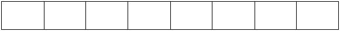

Vector Diagrams
Growing a vector:
- Original vector:

- After growing (allocate an array twice as large):

- Copy existing elements from original array into new array using a loop of some kind.
DO NOT USE memcpy or anything like that. Feel free to use memcpy if you like.

- Free the memory from the original array.
Removing an element from a vector:
- Assume this call: remove(5);// Removes first occurrence of the number 5
Original array: (size is 7)
- The index of the item to remove is 3:
- For each element to the right of the item to be removed, shift it over one slot to the left (working left to right):

- The array after the removal (size is now 6). Notice that the last element is in the array twice. (This is how it is supposed to work.)
Inserting into a vector:
- Assume this call: Insert(7, 2); // Insert the value 7 at position 2
- You must make sure that there is enough room in the array for one additional element. If the array is full, you must
grow it first (like the above diagrams).
- The insertion point is index 2: (size is 5)

- For each element to the right of the insertion point, shift (copy) it over one slot to the right (working right to left).


- Then copy the item at the index over to the right.

- Finally, insert the value at the proper index: (size is now 6)